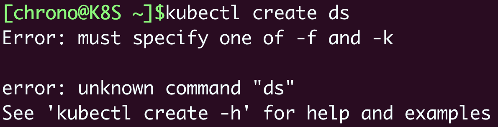
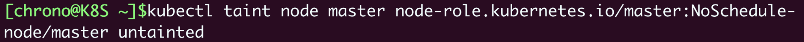
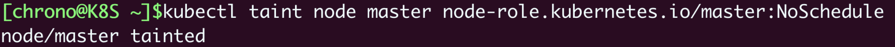
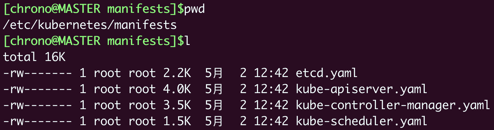

- 00 开篇词 迎难而上，做云原生时代的弄潮儿.md.html
- 00 课前准备 动手实践才是最好的学习方式.md.html
- 01 初识容器：万事开头难.md.html
- 02 被隔离的进程：一起来看看容器的本质.md.html
- 03 容器化的应用：会了这些你就是Docker高手.md.html
- 04 创建容器镜像：如何编写正确、高效的Dockerfile.md.html
- 05 镜像仓库：该怎样用好Docker Hub这个宝藏.md.html
- 06 打破次元壁：容器该如何与外界互联互通.md.html
- 07 实战演练：玩转Docker.md.html
- 08 视频：入门篇实操总结.md.html
- 09 走近云原生：如何在本机搭建小巧完备的Kubernetes环境.md.html
- 10 自动化的运维管理：探究Kubernetes工作机制的奥秘.md.html
- 11 YAML：Kubernetes世界里的通用语.md.html
- 12 Pod：如何理解这个Kubernetes里最核心的概念？.md.html
- 13 Job_CronJob：为什么不直接用Pod来处理业务？.md.html
- 14 ConfigMap_Secret：怎样配置、定制我的应用.md.html
- 15 实战演练：玩转Kubernetes（1）.md.html
- 16 视频：初级篇实操总结.md.html
- 17 更真实的云原生：实际搭建多节点的Kubernetes集群.md.html
- 18 Deployment：让应用永不宕机.md.html
- 19 Daemonset：忠实可靠的看门狗.md.html
- 20 Service：微服务架构的应对之道.md.html
- 21 Ingress：集群进出流量的总管.md.html
- 22 实战演练：玩转Kubernetes（2）.md.html
- 23 视频：中级篇实操总结.md.html
- 24 PersistentVolume：怎么解决数据持久化的难题？.md.html
- 25 PersistentVolume + NFS：怎么使用网络共享存储？.md.html
- 26 StatefulSet：怎么管理有状态的应用？.md.html
- 27 滚动更新：如何做到平滑的应用升级降级？.md.html
- 28 应用保障：如何让Pod运行得更健康？.md.html
- 29 集群管理：如何用名字空间分隔系统资源？.md.html
- 30 系统监控：如何使用Metrics Server和Prometheus？.md.html
- 31 网络通信：CNI是怎么回事？又是怎么工作的？.md.html
- 32 实战演练：玩转Kubernetes（3）.md.html
- 33 视频：高级篇实操总结.md.html
- 加餐 docker-compose：单机环境下的容器编排工具.md.html
- 加餐 谈谈Kong Ingress Controller.md.html
- 结束语 是终点，更是起点.md.html
- 捐赠
19 Daemonset：忠实可靠的看门狗
你好，我是Chrono。
上一次课里我们学习了Kubernetes里的一个新API对象Deployment，它代表了在线业务，能够管理多个Pod副本，让应用永远在线，还能够任意扩容缩容。
虽然Deployment非常有用，但是，它并没有完全解决运维部署应用程序的所有难题。因为和简单的离线业务比起来，在线业务的应用场景太多太复杂，Deployment的功能特性只覆盖了其中的一部分，无法满足其他场景的需求。
今天我们就来看看另一类代表在线业务API对象：DaemonSet，它会在Kubernetes集群的每个节点上都运行一个Pod，就好像是Linux系统里的“守护进程”（Daemon）。
为什么要有DaemonSet
想知道为什么Kubernetes会引入DaemonSet对象，那就得知道Deployment有哪些不足。
我们先简单复习一下Deployment，它能够创建任意多个的Pod实例，并且维护这些Pod的正常运行，保证应用始终处于可用状态。
但是，Deployment并不关心这些Pod会在集群的哪些节点上运行，在它看来，Pod的运行环境与功能是无关的，只要Pod的数量足够，应用程序应该会正常工作。
这个假设对于大多数业务来说是没问题的，比如Nginx、WordPress、MySQL，它们不需要知道集群、节点的细节信息，只要配置好环境变量和存储卷，在哪里“跑”都是一样的。
但是有一些业务比较特殊，它们不是完全独立于系统运行的，而是与主机存在“绑定”关系，必须要依附于节点才能产生价值，比如说：
- 网络应用（如kube-proxy），必须每个节点都运行一个Pod，否则节点就无法加入Kubernetes网络。
- 监控应用（如Prometheus），必须每个节点都有一个Pod用来监控节点的状态，实时上报信息。
- 日志应用（如Fluentd），必须在每个节点上运行一个Pod，才能够搜集容器运行时产生的日志数据。
- 安全应用，同样的，每个节点都要有一个Pod来执行安全审计、入侵检查、漏洞扫描等工作。
这些业务如果用Deployment来部署就不太合适了，因为Deployment所管理的Pod数量是固定的，而且可能会在集群里“漂移”，但，实际的需求却是要在集群里的每个节点上都运行Pod，也就是说Pod的数量与节点数量保持同步。
所以，Kubernetes就定义了新的API对象DaemonSet，它在形式上和Deployment类似，都是管理控制Pod，但管理调度策略却不同。DaemonSet的目标是在集群的每个节点上运行且仅运行一个Pod，就好像是为节点配上一只“看门狗”，忠实地“守护”着节点，这就是DaemonSet名字的由来。
如何使用YAML描述DaemonSet
DaemonSet和Deployment都属于在线业务，所以它们也都是“apps”组，使用命令 kubectl api-resources 可以知道它的简称是 ds ，YAML文件头信息应该是：
apiVersion: apps/v1
kind: DaemonSet
metadata:
name: xxx-ds
不过非常奇怪，kubectl 不提供自动创建DaemonSet YAML样板的功能，也就是说，我们不能用命令 kubectl create 直接创建出一个DaemonSet对象。

这个缺点对于我们使用DaemonSet的确造成了不小的麻烦，毕竟如果用 kubectl explain 一个个地去查字段再去写YAML实在是太辛苦了。
不过，Kubernetes不给我们生成样板文件的机会，我们也可以自己去“抄”。你可以在Kubernetes的官网（https://kubernetes.io/zh/docs/concepts/workloads/controllers/daemonset/）上找到一份DaemonSet的YAML示例，把它拷贝下来，再去掉多余的部分，就可以做成自己的一份样板文件，大概是下面的这个样子：
apiVersion: apps/v1
kind: DaemonSet
metadata:
name: redis-ds
labels:
app: redis-ds
spec:
selector:
matchLabels:
name: redis-ds
template:
metadata:
labels:
name: redis-ds
spec:
containers:
- image: redis:5-alpine
name: redis
ports:
- containerPort: 6379
这个DaemonSet对象的名字是 redis-ds，镜像是 redis:5-alpine，使用了流行的NoSQL数据库Redis（你也许对它很熟悉）。
把这份YAML和上节课里的Deployment对象简单对比一下，你会发现：
前面的 kind、metadata 是对象独有的信息，自然是不同的，但下面的 spec 部分，DaemonSet也有 selector 字段，匹配 template 里Pod的 labels 标签，和Deployment对象几乎一模一样。
再仔细观察，我们就会看到，DaemonSet在 spec 里没有 replicas 字段，这是它与Deployment的一个关键不同点，意味着它不会在集群里创建多个Pod副本，而是要在每个节点上只创建出一个Pod实例。
也就是说，DaemonSet仅仅是在Pod的部署调度策略上和Deployment不同，其他的都是相同的，某种程度上我们也可以把DaemonSet看做是Deployment的一个特例。
我还是把YAML描述文件画了一张图，好让你看清楚与Deployment的差异：

了解到这些区别，现在，我们就可以用变通的方法来创建DaemonSet的YAML样板了，你只需要用 kubectl create 先创建出一个Deployment对象，然后把 kind 改成 DaemonSet，再删除 spec.replicas 就行了，比如：
export out="--dry-run=client -o yaml"
# change "kind" to DaemonSet
kubectl create deploy redis-ds --image=redis:5-alpine $out
如何在Kubernetes里使用DaemonSet
现在，让我们执行命令 kubectl apply，把YAML发送给Kubernetes，让它创建DaemonSet对象，再用 kubectl get 查看对象的状态：

看这张截图，虽然我们没有指定DaemonSet里Pod要运行的数量，但它自己就会去查找集群里的节点，在节点里创建Pod。因为我们的实验环境里有一个Master一个Worker，而Master默认是不跑应用的，所以DaemonSet就只生成了一个Pod，运行在了“worker”节点上。
暂停一下，你发现这里有什么不对劲了吗？
按照DaemonSet的本意，应该在每个节点上都运行一个Pod实例才对，但Master节点却被排除在外了，这就不符合我们当初的设想了。
显然，DaemonSet没有尽到“看门”的职责，它的设计与Kubernetes集群的工作机制发生了冲突，有没有办法解决呢？
当然，Kubernetes早就想到了这点，为了应对Pod在某些节点的“调度”和“驱逐”问题，它定义了两个新的概念：污点（taint）和容忍度（toleration）。
什么是污点（taint）和容忍度（toleration）
“污点”是Kubernetes节点的一个属性，它的作用也是给节点“贴标签”，但为了不和已有的 labels 字段混淆，就改成了 taint。
和“污点”相对的，就是Pod的“容忍度”，顾名思义，就是Pod能否“容忍”污点。
我们把它俩放在一起就比较好理解了。集群里的节点各式各样，有的节点“纯洁无瑕”，没有“污点”；而有的节点因为某种原因粘上了“泥巴”，也就有了“污点”。Pod也脾气各异，有的“洁癖”很严重，不能容忍“污点”，只能挑选“干净”的节点；而有的Pod则比较“大大咧咧”，要求不那么高，可以适当地容忍一些小“污点”。
这么看来，“污点”和“容忍度”倒是有点像是一个“相亲”的过程。Pod就是一个挑剔的“甲方”，而“乙方”就是集群里的各个节点，Pod会根据自己对“污点”的“容忍程度”来选择合适的目标，比如要求“不抽烟不喝酒”，但可以“无车无房”，最终决定在哪个节点上“落户”。
Kubernetes在创建集群的时候会自动给节点Node加上一些“污点”，方便Pod的调度和部署。你可以用 kubectl describe node 来查看Master和Worker的状态：
kubectl describe node master
Name: master
Roles: control-plane,master
...
Taints: node-role.kubernetes.io/master:NoSchedule
...
kubectl describe node worker
Name: worker
Roles: <none>
...
Taints: <none>
...
可以看到，Master节点默认有一个 taint，名字是 node-role.kubernetes.io/master，它的效果是 NoSchedule，也就是说这个污点会拒绝Pod调度到本节点上运行，而Worker节点的 taint 字段则是空的。
这正是Master和Worker在Pod调度策略上的区别所在，通常来说Pod都不能容忍任何“污点”，所以加上了 taint 属性的Master节点也就会无缘Pod了。
明白了“污点”和“容忍度”的概念，你就知道该怎么让DaemonSet在Master节点（或者任意其他节点）上运行了，方法有两种。
第一种方法是去掉Master节点上的 taint，让Master变得和Worker一样“纯洁无瑕”，DaemonSet自然就不需要再区分Master/Worker。
操作Node上的“污点”属性需要使用命令 kubectl taint，然后指定节点名、污点名和污点的效果，去掉污点要额外加上一个 -。
比如要去掉Master节点的“NoSchedule”效果，就要用这条命令：
kubectl taint node master node-role.kubernetes.io/master:NoSchedule-

因为DaemonSet一直在监控集群节点的状态，命令执行后Master节点已经没有了“污点”，所以它立刻就会发现变化，然后就会在Master节点上创建一个“守护”Pod。你可以用 kubectl get 来查看这个变动情况：

但是，这种方法修改的是Node的状态，影响面会比较大，可能会导致很多Pod都跑到这个节点上运行，所以我们可以保留Node的“污点”，为需要的Pod添加“容忍度”，只让某些Pod运行在个别节点上，实现“精细化”调度。
这就是第二种方法，为Pod添加字段 tolerations，让它能够“容忍”某些“污点”，就可以在任意的节点上运行了。
tolerations 是一个数组，里面可以列出多个被“容忍”的“污点”，需要写清楚“污点”的名字、效果。比较特别是要用 operator 字段指定如何匹配“污点”，一般我们都使用 Exists，也就是说存在这个名字和效果的“污点”。
如果我们想让DaemonSet里的Pod能够在Master节点上运行，就要写出这样的一个 tolerations，容忍节点的 node-role.kubernetes.io/master:NoSchedule 这个污点：
tolerations:
- key: node-role.kubernetes.io/master
effect: NoSchedule
operator: Exists
现在我们先用 kubectl taint 命令把Master的“污点”加上：
kubectl taint node master node-role.kubernetes.io/master:NoSchedule

然后我们再重新部署加上了“容忍度”的DaemonSet：
kubectl apply -f ds.yml

你就会看到DaemonSet仍然有两个Pod，分别运行在Master和Worker节点上，与第一种方法的效果相同。
需要特别说明一下，“容忍度”并不是DaemonSet独有的概念，而是从属于Pod，所以理解了“污点”和“容忍度”之后，你可以在Job/CronJob、Deployment里为它们管理的Pod也加上 tolerations，从而能够更灵活地调度应用。
至于都有哪些污点、污点有哪些效果我就不细说了，Kubernetes官网文档（https://kubernetes.io/zh/docs/concepts/scheduling-eviction/taint-and-toleration/）上都列的非常清楚，在理解了工作原理之后，相信你自己学起来也不会太难。
什么是静态Pod
DaemonSet是在Kubernetes里运行节点专属Pod最常用的方式，但它不是唯一的方式，Kubernetes还支持另外一种叫“静态Pod”的应用部署手段。
“静态Pod”非常特殊，它不受Kubernetes系统的管控，不与apiserver、scheduler发生关系，所以是“静态”的。
但既然它是Pod，也必然会“跑”在容器运行时上，也会有YAML文件来描述它，而唯一能够管理它的Kubernetes组件也就只有在每个节点上运行的kubelet了。
“静态Pod”的YAML文件默认都存放在节点的 /etc/kubernetes/manifests 目录下，它是Kubernetes的专用目录。
下面的这张截图就是Master节点里目录的情况：

你可以看到，Kubernetes的4个核心组件apiserver、etcd、scheduler、controller-manager原来都以静态Pod的形式存在的，这也是为什么它们能够先于Kubernetes集群启动的原因。
如果你有一些DaemonSet无法满足的特殊的需求，可以考虑使用静态Pod，编写一个YAML文件放到这个目录里，节点的kubelet会定期检查目录里的文件，发现变化就会调用容器运行时创建或者删除静态Pod。
小结
好了，今天我们学习了Kubernetes里部署应用程序的另一种方式：DaemonSet，它与Deployment很类似，差别只在于Pod的调度策略，适用于在系统里运行节点的“守护进程”。
简单小结一下今天的内容：
- DaemonSet的目标是为集群里的每个节点部署唯一的Pod，常用于监控、日志等业务。
- DaemonSet的YAML描述与Deployment非常接近，只是没有
replicas字段。 - “污点”和“容忍度”是与DaemonSet相关的两个重要概念，分别从属于Node和Pod，共同决定了Pod的调度策略。
- 静态Pod也可以实现和DaemonSet同样的效果，但它不受Kubernetes控制，必须在节点上纯手动部署，应当慎用。
课下作业
最后是课下作业时间，给你留两个思考题：
- 你觉得DaemonSet和Deployment在用法上还有哪些不同？它们分别适用于哪些场景？
- 你觉得在Kubernetes里应该如何用好“污点”和“容忍度”这两个概念？
欢迎留言分享你的想法，和其他同学一起参与讨论。我们下节课再见。

© 2019 - 2023 Liangliang Lee. Powered by gin and hexo-theme-book.